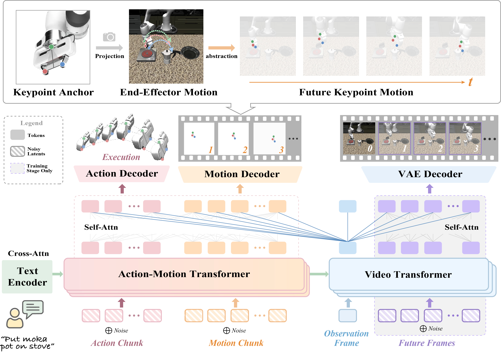
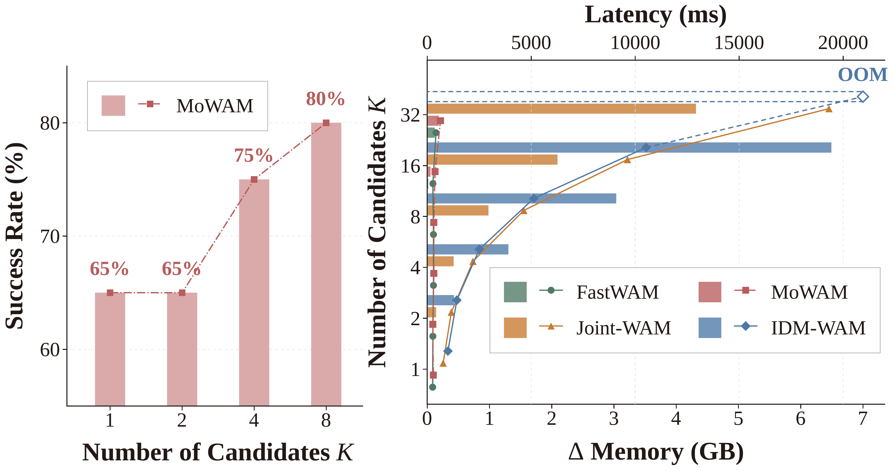

MoWAM: Explicit Future Motion Prediction
for Efficient World Action Models
1 College of Computer Science and Artificial Intelligence, Fudan University
2 Singapore Management University
3 Institute of Trustworthy Embodied AI, Fudan University
* Corresponding author
MoWAM
Video Overview
Abstract
World Action Models (WAMs) improve robot policy learning by incorporating future dynamics, yet generating future videos at inference introduces substantial computational overhead. We propose MoWAM, an efficient WAM that replaces future video generation with explicit future motion prediction. Structured end-effector motion provides a compact representation of how the robot is expected to evolve under the current scene and interaction constraints. A Mixture-of-Transformer architecture learns future visual dynamics during training while jointly predicting motion and action, allowing future video generation to be removed at inference. The compact motion representation also enables sampling multiple motion–action candidates and selecting among them with a motion-aware task-progress verifier. Experiments on LIBERO, LIBERO-Plus, and real-world manipulation tasks demonstrate strong in-domain performance, improved out-of-distribution robustness, and efficient inference-time candidate exploration.
MoWAM Framework
Method

Structured motion. MoWAM represents the end effector using the gripper center, fingertip span, and relative palm offset. Their temporal changes and relative geometry describe expected future execution.
Motion and action prediction. The Action-Motion Transformer jointly predicts actions and future motion from the observation features, allowing predicted motion to inform action generation. Future frames support training but are not generated during policy execution.
Real-World Demonstrations 1 / 3
Pick Banana
Pick up the banana and place it in the basket.
Franka Research 3 · Successful MoWAM executions
Real-World Demonstrations 2 / 3
Stack Bowls
Pick up one bowl and stack it inside the other.
Franka Research 3 · Successful MoWAM executions
Real-World Demonstrations 3 / 3
Close Drawer
Close the open drawer through controlled contact.
Franka Research 3 · Successful MoWAM executions
Experimental Results
LIBERO
Task success across all four suites. All 13 methods reported in the paper are shown.
| Method | Robo. P.T. | Spatial | Object | Goal | Long | Average |
|---|---|---|---|---|---|---|
| OpenVLA | ✓ | 84.7 | 88.4 | 79.2 | 53.7 | 76.5 |
| OpenVLA-OFT | ✓ | 97.2 | 97.8 | 96 | 96 | 96.75 |
| UniVLA | ✓ | 95.4 | 94.8 | 94.8 | 90.8 | 93.95 |
| π₀ | ✓ | 96.8 | 98.8 | 95.8 | 85.2 | 94.1 |
| π₀-FAST | ✓ | 97.8 | 97.8 | 88.2 | 61 | 86.2 |
| π₀.₅ | ✓ | 98.8 | 98.2 | 98 | 92.4 | 96.9 |
| LingBot-VA | ✓ | 98.5 | 99.6 | 97.2 | 98.5 | 98.5 |
| Motus | ✓ | 96.8 | 99.8 | 96.6 | 97.6 | 97.7 |
| LaWAM | ✓ | 99 | 96 | 97.2 | 93.4 | 96.4 |
| Fast-WAM | ✗ | 96.6 | 99.2 | 94.6 | 95.6 | 96.5 |
| IDM-WAM | ✗ | 98.6 | 99.4 | 98.4 | 96.4 | 98.2 |
| Joint-WAM | ✗ | 99 | 99.2 | 99 | 97.8 | 98.75 |
| MoWAM | ✗ | 98.8 | 99.8 | 99 | 97.8 | 98.9 |
Success rates (%). Robo. P.T. (robotic embodied pretraining): ✓ = used; ✗ = not used. The first six baselines are VLA-based; LingBot-VA through Joint-WAM are WAM-based.
Experimental Results
LIBERO-Plus
All 11 methods reported in the paper, evaluated across seven distribution shifts with LIBERO-trained checkpoints.
No LIBERO-Plus training data. All methods are evaluated directly with checkpoints trained on LIBERO. No LIBERO-Plus data is used for training or fine-tuning, and no additional adaptation is performed before evaluation.
| Method | Robo. P.T. | Objects | Camera | Initial | Light | Background | Sensor | Language | Average | Latency (ms) |
|---|---|---|---|---|---|---|---|---|---|---|
| OpenVLA | ✓ | 53 | 2 | 15 | 24 | 54 | 32 | 44 | 32.00 | 128.71 |
| OpenVLA-OFT | ✓ | 73 | 65 | 27 | 94 | 89 | 70 | 87 | 72.14 | 103.3 |
| UniVLA | ✓ | 76 | 8 | 62 | 77 | 90 | 19 | 80 | 58.86 | 492.2 |
| π₀ | ✓ | 81 | 62 | 40 | 92 | 81 | 75 | 70 | 71.57 | 62.9 |
| π₀-FAST | ✓ | 73 | 62 | 26 | 72 | 76 | 70 | 78 | 65.29 | 274.22 |
| Motus | ✓ | 89 | 48 | 88 | 83 | 78 | 57 | 89 | 76.00 | 1621.9 |
| LaWAM | ✓ | 84 | 37 | 70 | 92 | 95 | 73 | 98 | 78.43 | 108.52 |
| Fast-WAM | ✗ | 82 | 42 | 74 | 85 | 63 | 72 | 75 | 70.43 | 260.1 |
| IDM-WAM | ✗ | 84 | 59 | 79 | 90 | 68 | 86 | 95 | 80.14 | 995.4 |
| Joint-WAM | ✗ | 85 | 51 | 91 | 95 | 67 | 78 | 97 | 80.57 | 766.3 |
| MoWAM | ✗ | 87 | 51 | 86 | 96 | 68 | 86 | 96 | 81.43 | 293.5 |
Success rates (%); latency is milliseconds per action chunk on one RTX 5090 with identical action horizons. Robo. P.T. (robotic embodied pretraining): ✓ = used; ✗ = not used.
Experimental Results
Real-World Evaluation
Pick Banana, Stack Bowls, and Close Drawer on a Franka Research 3 robot.
| Method | Robo. P.T. | Pick Banana | Stack Bowls | Close Drawer | Average | Latency (ms) |
|---|---|---|---|---|---|---|
| Motus | ✓ | 65 | 65 | 85 | 71.67 | 1621.9 |
| Fast-WAM | ✗ | 30 | 85 | 20 | 45 | 260.1 |
| MoWAM | ✗ | 65 | 95 | 80 | 80 | 293.5 |
100 demonstrations and 20 standard evaluation trials per task. Success rates (%); latency in milliseconds per action chunk. Robo. P.T. (robotic embodied pretraining): ✓ = used; ✗ = not used.
Experimental Results
Inference-Time Scaling

| Number of candidates K | 1 | 2 | 4 | 8 |
|---|---|---|---|---|
| Success rate (%) | 65 | 65 | 75 | 80 |
MoWAM scales close to Fast-WAM. Joint-WAM and IDM-WAM become substantially more expensive as K increases, and IDM-WAM runs out of memory at K = 32. MoWAM generates eight candidates in less time than either full-visual-future variant requires for one candidate.
Reference
Citation
If you find this work useful, please cite:
@article{wang2026mowam,
title={MoWAM: Explicit Future Motion Prediction for Efficient World Action Models},
author={Wang, Jiayu and Zhu, Bin and Yu, Yue and Chen, Jingjing},
journal={arXiv preprint arXiv:2609.20709},
year={2026}
}